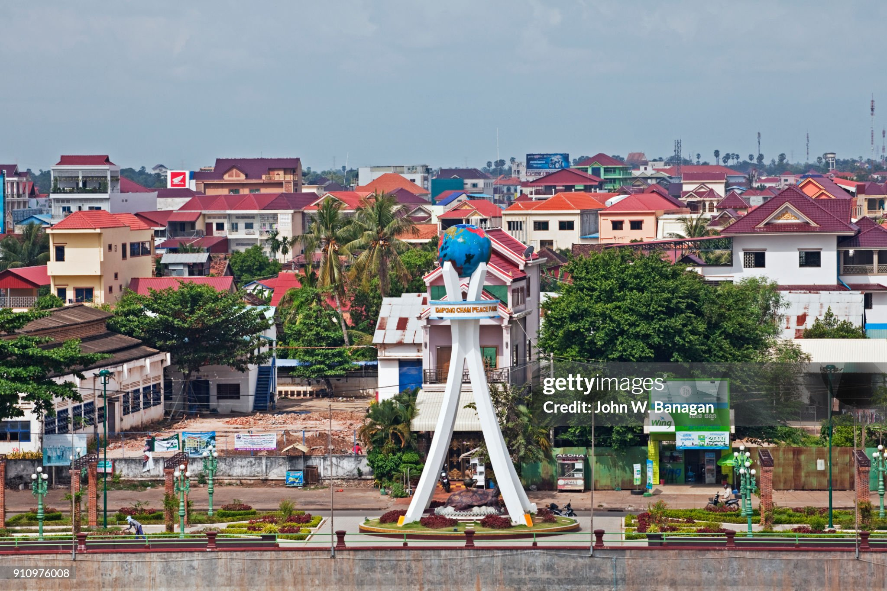
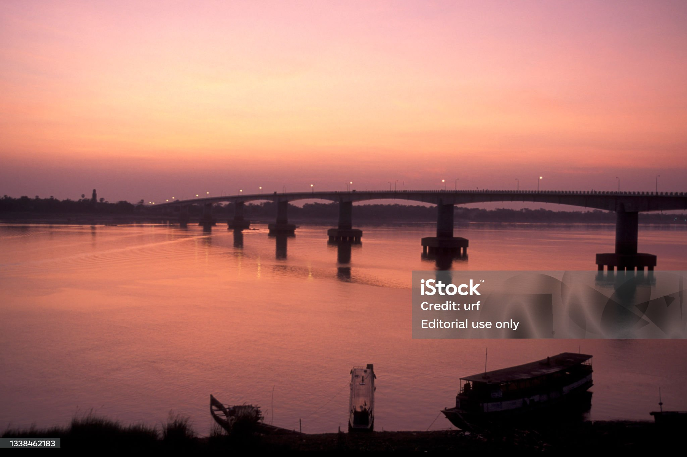

A Photo Tour of
CAMBODIA
"KIMDOM OF WONDER"
KOMPONG CHAM
Kampong Cham is a modest and adorable city on the east side of Cambodia on the riverbanks of the Mekong River. Kampong Cham is distinguished by its colonial architecture, views of the river, and a slow-paced atmosphere. While navigating Kampong Cham, you will discover cultural and historical sites like Wat Nokor, an 12th-century temple complex, and the Bamboo Bridge (rebuilt seasonally) that connects you to Koh Paen Island.
Kampong Cham is also an important agricultural district, known for rubber plantations and traditional village lifestyles. Though not as touristy as Siem Reap or Phnom Penh, it offers a more genuine experience of everyday life in Cambodia.
